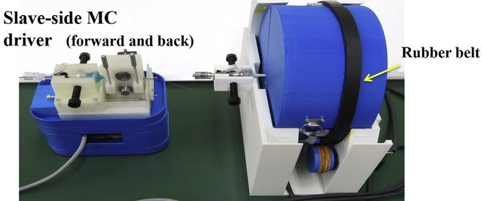

Academic bedside robots · aichi_miyachi2019
Aichi support robot
Neuroendovascular intervention support robot with insertion-force sensing (Aichi)

1 / 9


- Family
- Academic bedside robots (academic)
- Devices
- microcatheter (forward/back) and microguidewire (forward/back/twist) at once, by two independent slaves; guiding catheter placed manually (miyachi2019_novel Methods, Fig. 3); coil delivery in the 2025 version (miyachi2025_robotics Fig. 3)
- Degrees of freedom
- 3 (MC translation; MGW translation + rotation) (miyachi2019_novel Slave Manipulator, Fig. 3)
- Push
- Friction rollers
- Twist
- Other
- Tested up to
- Phantom
- Sim-to-real
- None found — No simulation-trained controller found for this robot.
Testing
- Highest level
- Phantom
- What was tested
- bench: > 50 master-slave trials without error motion, force-gauge calibration (miyachi2019_novel Results); phantom: microcatheterisation and aneurysm-sac insertion in a wet EVE silicone whole-vessel model with closed saline circulation under fluoroscopy, repeated AngioSuite trials all successful (Results, Figs. 6-7); remote coiling with the master 50 m away over LAN/HTTP (miyachi2021_remote)
- Key numbers
- slave output force > 1 N; guidewire speed about 1 mm/s (523:1 gear); slave roller slips above 1 N pushing load (safety); force gauge +/-0.04 N; start-motion lag 0.1-0.2 s (miyachi2019_novel); delays about 0.1 s each for motor stop, Bluetooth, video and network (miyachi2021_remote)
Mechanism
- Push (translation)
- friction-roller: device pinched between two rollers, DC motor through a 523:1 gear, upper roller in an open-close cover; roller grip set to slip above 1 N push (miyachi2019_novel Slave Manipulator, Driving Speed and Safety Function)
- Twist (rotation)
- MGW roller unit and force sensor sit inside a drum turned by an engaging roller with a rubber anti-slip belt; battery inside the drum allows 360 deg rotation (miyachi2019_novel Slave Manipulator, Fig. 3); Bluetooth link to its motor in 2021 (miyachi2021_remote)
- Device range
- N.R.
- Target anatomy
- cerebral (aneurysm coiling)
Sensing and interface
- Force sensing
- proximal: push/pull force sensor behind the MGW roller actuator, shown on the monitor in newtons and as a musical tone; repeatability +/-0.04 N (miyachi2019_novel Slave Manipulator, Results, Figs. 4-5); insertion-force sensor in the Y-connector in later versions
- Leader and haptics
- no haptics; two joysticks (left MC, right MGW; tilt left/right advances/withdraws, forward/back twists the MGW, speed proportional to tilt) with audio/visual force display (miyachi2019_novel Master Manipulator)
- Imaging
- X-ray angiography room: clinical simulation on the aneurysm model in a standard AngioSuite with the operator in the control room (miyachi2019_novel Fig. 7)
- Sterility
- slave units are waterproof; electric cords and circuit boards under the supporting frame (miyachi2019_novel Slave design); drape N.R.
Size
- Footprint (mm)
- N.R.
- Mass (kg)
- N.R.
Simulation
- Simulation model
- none found
- Sim-trained controller
- none found
Versions
- Lineage
- 2019 prototype with 2 independent slaves and 2-joystick master (miyachi2019_novel, World Neurosurg 127:e617, full); 2021 remote operation over LAN (miyachi2021_remote, PMC HTML); 2025 review with miniaturised 3D-printed slave and automatic coil insertion (miyachi2025_robotics)
Sources
- Novel Operation Support Robot with Sensory-Motor Feedback System for Neuroendovascular Intervention · World Neurosurgery, 2019 · doi:10.1016/j.wneu.2019.03.221 [miyachi2019_novel]
- Remote surgery using a neuroendovascular intervention support robot equipped with a sensing function: Experimental verification · Asian Journal of Neurosurgery, 2021 · doi:10.4103/ajns.ajns_77_21 [miyachi2021_remote]
- Robotics for Neuroendovascular Therapy · Journal of Neuroendovascular Therapy, 2025 · doi:10.5797/jnet.ra.2024-0112 [miyachi2025_robotics]
Notes
- Notes
- 2026-11-08 X3: miyachi2019 read in full; main picture replaced by the same photo from the 2019 paper at 957 px with fewer labels (old 590 px file kept as aichi_miyachi2019_prev.png)
This record
- Read level
- full — full (miyachi2019_novel, ); partial (miyachi2021_remote PMC HTML via WebFetch); full (miyachi2025_robotics)
- Picture
- miyachi2019_novel Fig. 2 (external appearance of the whole system), p. e618, World Neurosurg 2019 doi:10.1016/j.wneu.2019.03.221 ↗ — licence: publisher copyright (Elsevier); grade B
- Picture changes
- native extract (957 x 656 figure); cropped below the top label and above the joystick box; nothing erased; not upscaled
- Found by
- gap: Gap searches for robots the other searches missed.
- Data
- JSON · YAML:
records/robots/aichi_miyachi2019.yaml - Correction
- Suggest a correction [repository not created yet]